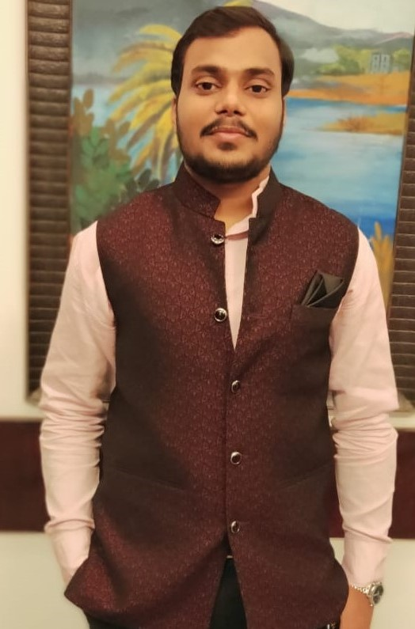

Hello, I am Priyam Agarwal
CSE Student. BATCH of "22.
I am contesting in ACM election, 2020.
About me

Currently studying in 3rd year having CSE major, I have been an enthusiastic learner in the field of computer science since school days. I perceive ACM to be a society which caters to the needs and overall academic development of the students who aspire to study in the field of Computer Science. I am willing to take this vision forward and serve my fellow mates to the best of my ability.
I have been doing competitive coding for a few years. I was part of the Website Development Team for Breeze: Annual fest of SNU and have done many major and minor projects of Web Development. I am presently an internee at "EduZent InfoSolutions". I have worked for nearly four months for this company. I am working on a research paper in the field of Computer Vision under the guidance of a professor of IIT-Ropar. I have some experience in each field where a student pursuing Computer Science sees his career in. I have been a decent academic scorer with a GPA of 8.84 in 4 semesters. Out of the 160 credits, I have completed 91 credits in my 4 semesters and will be doing approximately 16 credits per semester from the next semester which gives me ample amount of time to be available for ACM and perform my duties.
My Vision
Highlights of my vision!
- Missing Semester
- Research Group
Open Source @ SNU
Coding
Conducting Classes of Basic Coding Courses
All Basic courses that are taught in our CSE curriculum give insight to the theoratical aspect of these courses like ICP , Data Structures, etc. There will be classes conducted which will cover the practical approach of the same. Sessions focusing on rendering skills of practical usage for major courses taught under CSE curriculum will be conducted more often in a comfortable environment including students of all years.
Conduction of New Coding Events.
Apart from conducting hackathons and coding sprints timely, competitions of varied interests like debugging competitions will also be incorporated from time to time in order to keep up the
coding spirit in every individual due to increased opportunities. Conduction of different types of events will maintain student's interest in coding as well as maintain his continuity of practicing coding.
To equip the students with proper skillset to ace in interviews, future entrance exams, competitions and placements, events like mock tests and quizzes will be conducted on a timely basis.
These Examinations consist of questions from nearly every course of the CSE curriculum so these types of quizzes and mock tests will result in practice and revision of students.
ACM Alliance
Creation of an ACM Union in collaboration with other colleges to increase competitiveness and engagement in events. Many nearby colleges like Bennet and Ashoka have sports relations with us. So why not extend the same to coding. Students from all these colleges get better competency. If we get good number of participants we can also make way for coding platforms that are used by companies to conduct placement exams.
Talks can be Fun !
Missing Semester
Sessions, teaching proficiency with the tools going to be used in everyday codings like GitHub and CLI (command line interface), will be conducted in order to make the coding practices more fluid and frictionless. This will include how to master the command-line, use a powerful text editor, use fancy features of version control systems, etc.These sessions would be taken by ACM members and other qualified people and a special care would be given to making the sessions extremely interactive and fun for all. These small things look like they are of not much importance but when you start to explore Computer Science these become necessities. These are never taught in classes.
Talks of Influential Industry People.
Conduction of talks and interactive sessions with qualified people from industry as well as professional studies. This would be done in order to provide motivation to students.
Push Towards Research!
Research ACE Groups
Creation of research ACE groups consisting of 3-4 students (of any year) who will research on a topic under a mentor (an SNU professor). This would allow students to have a first-hand experience in research and help them in their future research endeavors :)
Open Source @ SNU
Participation in Open Source Events
GSOC (Google Summer of Code), MLH (Major League Hacking) fellowship, and similar open source programs. While SNU has a really vibrant developer community, our participation numbers in Open Source programs like Google summer of code have not been great. I believe that can change! Starting with the basic 30 days of open source challenge Then we can move on to more indepth programs such as GSOC application which would be starting from January End!! All of us can work on various member organizations and help each other with the application process. ( I also know seniors who have gotten selected in the above said programs and would be more than happy to help!)
Creating Open source at SNU
Promotion of a culture of open source in SNU. Every Project taken up by ACM ace groups would likely have the entire code base available freely mostly on Github.
Other Work Areas
Reformations in Existing ACE Groups
The existing ACE groups of development, machine learning and competitive coding will undergo some maintenance like more availability of resources and more mentors per group.
Feedback Mechanism
Creating a proper feedback mechanism through which possible conduction of monthly feedback be undertaken. It will be mostly through the ACM website but all communication handles will be available for suggestions and feedback.
Promoting Online Learning
Availability of MOOCS platform like Coursera will be made for all students.